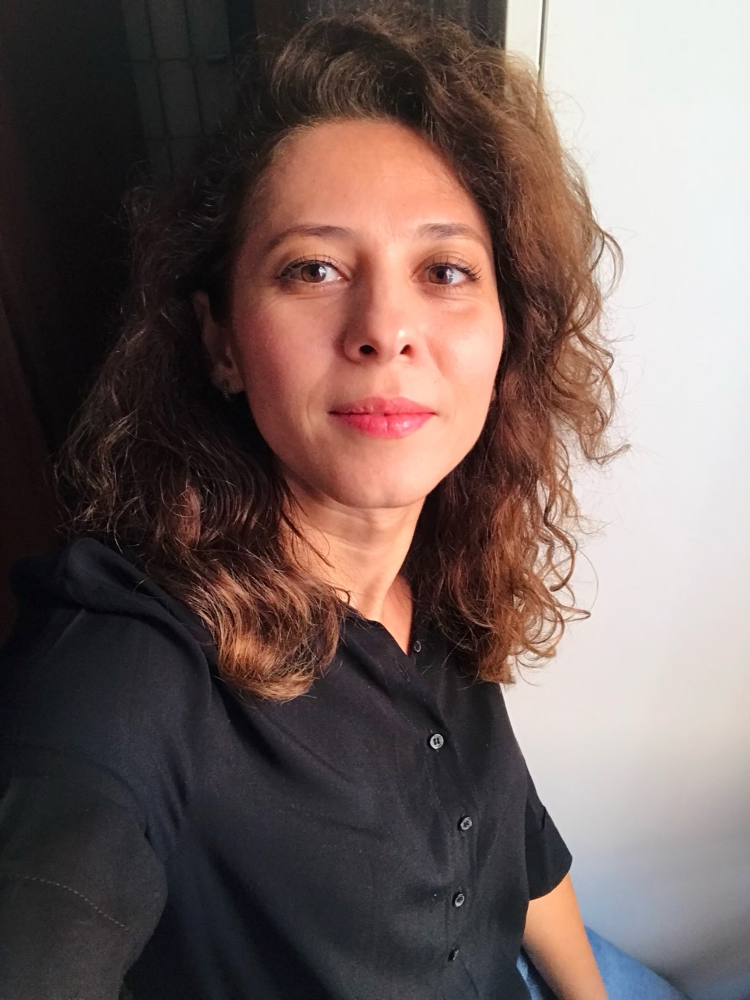

Dr Sinem Aslan

Associate Professor, University of Milan
Associate Academic Member, European Centre for Living Technology, Ca’ Foscari University of Venice
Dr. Sinem Aslan is an Associate Professor of Computer Science at the Department of Historical Studies at the University of Milan in Italy. Her research spans pattern recognition, computer vision, and machine learning for cultural heritage, covering topics such as the visual analysis of ancient coins, the study of artistic techniques in paintings, and the digital restoration of frescoes. Before joining the University of Milan, she held research positions at Ca’ Foscari University of Venice and the University of Milano-Bicocca, and conducted visiting research at Boğaziçi University in Turkey. Dr. Aslan has contributed to several interdisciplinary projects, including the EU Horizon 2020 RePAIR (Reconstructing the Past: Artificial Intelligence and Robotics meet Cultural Heritage) project, the BRIDGE project and VENEZIA2021 initiative on lagoon water quality estimation. She has also collaborated within the EU Pathfinder MUHAI project. She has had Area Chair roles at BMVC (2024, 2025), IEEE MLSP 2025, and ICASPP 2026; organizing the FAPER workshop series within ICIAP and the CHAOS challenge; and is an Associate editor at the Journal of the Franklin Institute, Elsevier Array, and Frontiers in Artificial Intelligence. She is also a member of the IAPR Technical Committee 19 on Computer Vision for Cultural Heritage Applications. Dr. Aslan holds a BSc in Electronics Engineering from Ankara University (Turkey), and an MSc and PhD in Computer Science from Ege University (Turkey).
News
- [12/2025] Giving an invited talk titled Exploring Cultural Heritage through Computer Vision at the University of Turin.
- [10/2025] Area Chair at IEEE ICASSP 2026
- [09/2025] Co-Organizing FAPER workshop within ICIAP 2025
- [09/2025] Presented our paper titled "Solving Jigsaw Puzzles in the Wild: Human-Guided Reconstruction of Cultural Heritage Fragments" at the Computer Vision session of IEEE MLSP, both as a poster and an oral presentation.
- [08/2025] Co-Organizing the special session Applications of AI in the Analysis of Cultural and Artistic Heritage within MLSP 2025
- [06/2025] Area Chair at MLSP2025
- [05/2025] Area Chair at BMVC2025
- [04/2025] Senior Program Committee Member at ECAI2025
- [01/2025] Associate Editor at Journal of the Franklin Institute
- [05/2024] Area Chair at BMVC2024
- [09/2024] Joined to University of Milan as an Associate professor.
- [05/2022] Joined to Ca Foscari University of Venice as an Assistant professor.
- [05/2018] I gave a seminar on Visual dictionaries and Semantic segmentation with DCNNs at Dokuz Eylül University, Electrical & Electronics Engineering Department, İzmir.
- [03/2018] I will be presenting our paper at the special session of Signal Processing Technologies for Gastronomy, Food Analysis, Nutrition and Dietetics of SIU 2018 .
- [01/2018] I gave a seminar on the topic of Image understanding: Visual dictionaries and Semantic segmentation at European Centre for Living Technology (ECLT) of University Ca' Foscari of Venice, Italy.
-
[11/2017] I gave a seminar on the topic of Exploring visual dictionaries: A model driven perspective at the Faculty of Science and Technology of University Paris-Est Créteil (UPEC), Paris, France. -
[09/2017] Our paper is accepted to be published in JVCI ! -
[09/2017] I presented our paper at MADiMa 2017 . -
[03/2017] I moved to Milano to join IVL team!